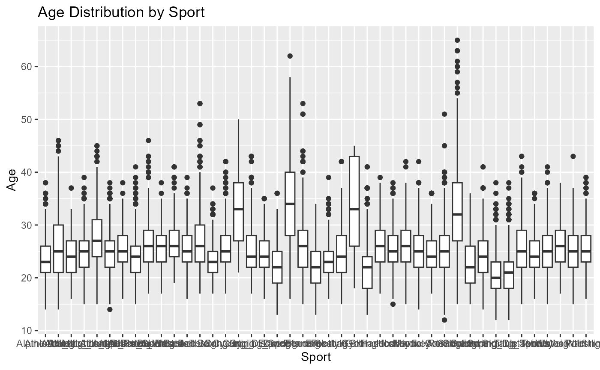
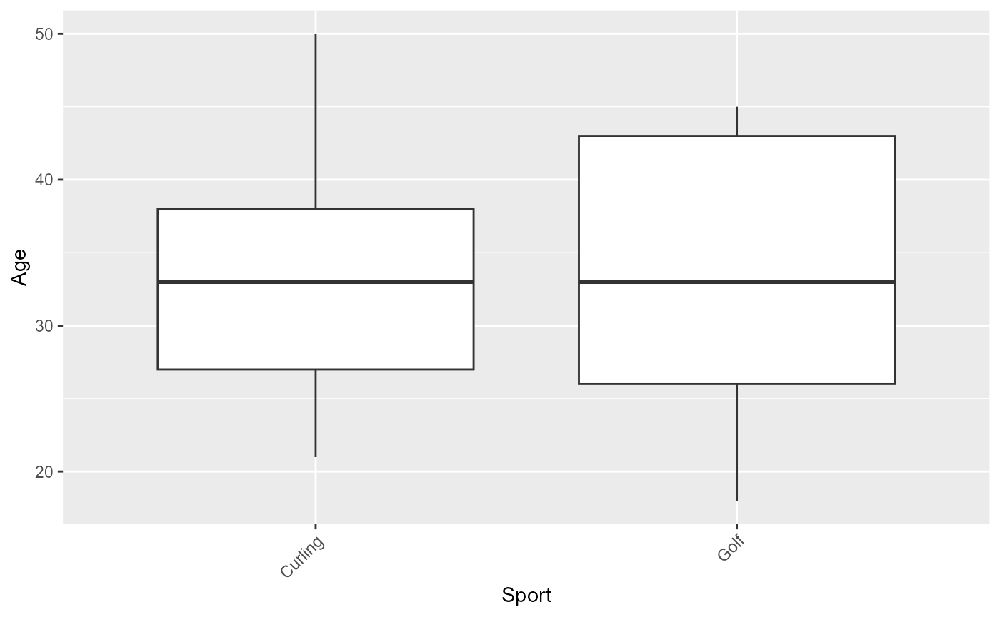

package_overview.RmdOverview of the package and what it does.
Key features or functionalities.
Why users would find the package useful.
Installation Instructions
# First, install the package by go to this github link:
# ETC5523-2024/assignment-4-packages-and-shiny-apps-belajaRProgramming0
# Next, type tis in your R Console:
install.packages("rafliassign4")
#> Installing package into 'C:/Users/ASUS/AppData/Local/Temp/RtmpqIZPVS/temp_libpath39c06b91344b'
#> (as 'lib' is unspecified)
#> Warning: package 'rafliassign4' is not available for this version of R
#>
#> A version of this package for your version of R might be available elsewhere,
#> see the ideas at
#> https://cran.r-project.org/doc/manuals/r-patched/R-admin.html#Installing-packages
# Last, load the library into your workspace (Rmd, qmd, etc.)
library(rafliassign4)Step-by-step examples of how to use the package’s functions or data.
# Example: Generate a boxplot for an attribute
library(ggplot2)
library(tidyverse)
#> Warning: package 'tidyverse' was built under R version 4.3.3
#> Warning: package 'dplyr' was built under R version 4.3.3
#> Warning: package 'forcats' was built under R version 4.3.3
#> Warning: package 'lubridate' was built under R version 4.3.3
#> ── Attaching core tidyverse packages ──────────────────────── tidyverse 2.0.0 ──
#> ✔ dplyr 1.1.4 ✔ readr 2.1.5
#> ✔ forcats 1.0.0 ✔ stringr 1.5.1
#> ✔ lubridate 1.9.3 ✔ tibble 3.2.1
#> ✔ purrr 1.0.2 ✔ tidyr 1.3.1
#> ── Conflicts ────────────────────────────────────────── tidyverse_conflicts() ──
#> ✖ dplyr::filter() masks stats::filter()
#> ✖ dplyr::lag() masks stats::lag()
#> ℹ Use the conflicted package (<http://conflicted.r-lib.org/>) to force all conflicts to become errors
ggplot(cleaned_data, aes(x = Sport, y = Age)) +
geom_boxplot() +
labs(title = "Age Distribution by Sport", x = "Sport", y = "Age")
Visualizations and Plots (Optional)
Use plots, diagrams, or tables to make it easier for users to understand the results. Example of a boxplot relevant to your package data:
library(ggplot2)
library(tidyverse)
ggplot(cleaned_data %>% filter(Top_1_attr == "ANA"), aes(x = Sport, y = Age)) +
geom_boxplot() +
theme(axis.text.x = element_text(angle = 45, hjust = 1))